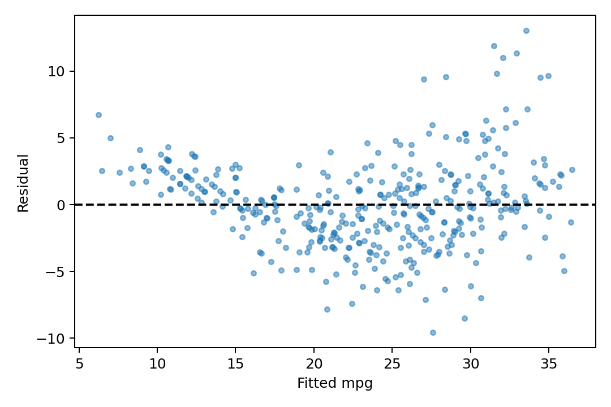

代码 3.7-06 · 第 9 题：诊断、交互与变换
按完整 Notebook 的顺序运行；本块可能依赖前面的变量。3.6—3.7包含教材真实数据与模拟实验；全样本统计分析不等于独立测试评估。
逐步读代码
abs().nlargest(3)找绝对学生化残差最大的3个索引，.loc按标签取原行。每轮copy建立独立扩展矩阵，添加一列交互或变换；不让各轮累积。这里是在保留原线性主效应的基础上添加变换，检验该附加项。对数与平方根要求输入满足定义域，此数据horsepower均正。探索多个模型得到的p值应注明探索性质，训练调整R²并非测试表现。
实际运行输出
largest absolute studentized residuals:
studentized leverage
name
mazda glc 4.0295 0.0137
vw dasher (diesel) 3.6902 0.0287
vw rabbit c (diesel) 3.4948 0.0196
largest leverage:
studentized leverage
name
buick estate wagon (sw) -1.6329 0.1899
hi 1200d 0.8037 0.0895
chevy c20 0.4940 0.0674
hp_weight p= 4.11858e-23 adjusted R2= 0.858952
weight_year p= 1.47316e-14 adjusted R2= 0.843854
hp_squared p= 3.46978e-19 adjusted R2= 0.852202
hp_log p= 1.62103e-21 adjusted R2= 0.856246
hp_sqrt p= 1.953e-21 adjusted R2= 0.856107
